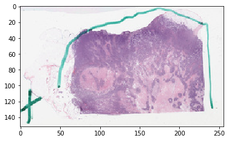
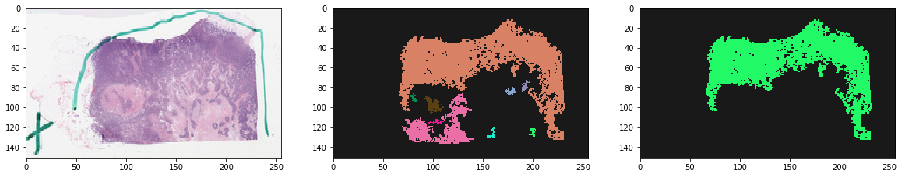
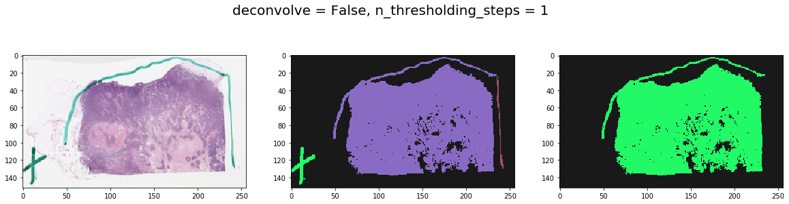
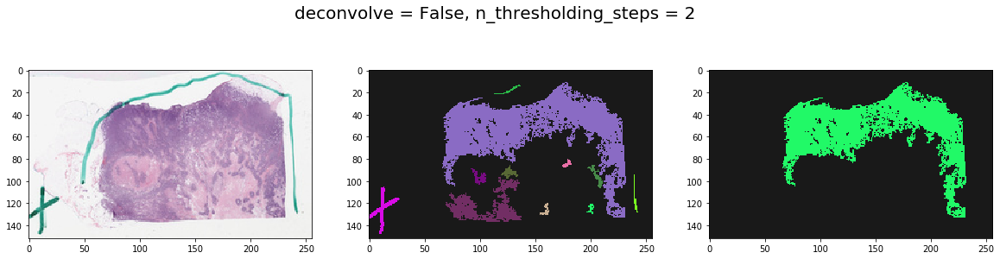
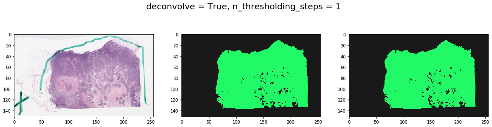
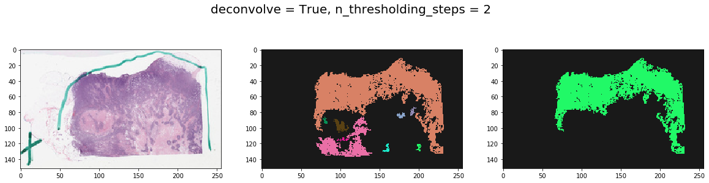

Tissue Detection¶
Overview: This includes tools to detect tissue from an item (slide) using its thumbnail. The basic functionality includes a series of gaussian smoothing and otsu thresholding steps to detect background versus foreground pixels. Optionally, an initial step is performed whereby color deconvolution is used to deparate hematoxylin and eosin stains (assuming H&E stained slides) to make sure only cellular areas are segmented. This proves to be useful in getting rid of sharpie markers. A size threshold is used to keep only largest contiguous tissue regions.
 Where to look?
Where to look?
|_ histomicstk/
|_saliency/
|_tissue_detection.py
|_tests/
|_test_saliency.py
[1]:
import girder_client
import numpy as np
from matplotlib import pylab as plt
from matplotlib.colors import ListedColormap
from histomicstk.saliency.tissue_detection import (
get_slide_thumbnail, get_tissue_mask)
%matplotlib inline
Constants and Prepwork¶
[2]:
APIURL = 'http://candygram.neurology.emory.edu:8080/api/v1/'
# SAMPLE_SLIDE_ID = '5d586d57bd4404c6b1f28640'
SAMPLE_SLIDE_ID = '5d817f5abd4404c6b1f744bb'
gc = girder_client.GirderClient(apiUrl=APIURL)
# gc.authenticate(interactive=True)
_ = gc.authenticate(apiKey='kri19nTIGOkWH01TbzRqfohaaDWb6kPecRqGmemb')
First, let’s fetch the slide thumbnail¶
[3]:
thumbnail_rgb = get_slide_thumbnail(gc, SAMPLE_SLIDE_ID)
[4]:
plt.imshow(thumbnail_rgb)
[4]:
<matplotlib.image.AxesImage at 0x7f3ca4cdbd90>

(Optional) Color normalization of thumbnail¶
See documentation for color_normalization module.
Now we fetch the tissue mask¶
This is the method you want to use¶
[5]:
print(get_tissue_mask.__doc__)
Get binary tissue mask from slide thumbnail.
Parameters
-----------
thumbnail_rgb : np array
(m, n, 3) nd array of thumbnail RGB image
deconvolve_first : bool
use hematoxylin channel to find cellular areas?
This will make things ever-so-slightly slower but is better in
getting rid of sharpie marker (if it's green, for example).
Sometimes things work better without it, though.
stain_matrix_method : str
see deconv_color method in seed_utils
n_thresholding_steps : int
number of gaussian smoothing steps
sigma : float
sigma of gaussian filter
min_size : int
minimum size (in pixels) of contiguous tissue regions to keep
Returns
--------
np bool array
largest contiguous tissue region.
np int32 array
each unique value represents a unique tissue region
Get the tissue masks¶
[6]:
labeled, mask = get_tissue_mask(
thumbnail_rgb, deconvolve_first=True,
n_thresholding_steps=2, sigma=0., min_size=30)
/home/mtageld/Desktop/HistomicsTK/histomicstk/preprocessing/color_conversion/rgb_to_sda.py:48: RuntimeWarning: divide by zero encountered in log
im_sda = -np.log(im_rgb/(1.*I_0)) * 255/np.log(I_0)
Visualize the result¶
[7]:
vals = np.random.rand(256,3)
vals[0, ...] = [0.9, 0.9, 0.9]
cMap = ListedColormap(1 - vals)
f, ax = plt.subplots(1, 3, figsize=(20, 20))
ax[0].imshow(thumbnail_rgb)
ax[1].imshow(labeled, cmap=cMap) # all tissue regions
ax[2].imshow(mask, cmap=cMap) # largest tissue region
plt.show()

Note effect of hyperparameters¶
[8]:
for deconvolve_first in [False, True]:
for n_thresholding_steps in [1, 2]:
labeled, mask = get_tissue_mask(
thumbnail_rgb, deconvolve_first=deconvolve_first,
n_thresholding_steps=n_thresholding_steps, sigma=0., min_size=30)
f, ax = plt.subplots(1, 3, figsize=(20, 5))
ax[0].imshow(thumbnail_rgb)
ax[1].imshow(labeled, cmap=cMap)
ax[2].imshow(mask, cmap=cMap)
plt.suptitle('deconvolve = %s, n_thresholding_steps = %d' % (deconvolve_first, n_thresholding_steps), fontsize=20)
plt.show()



